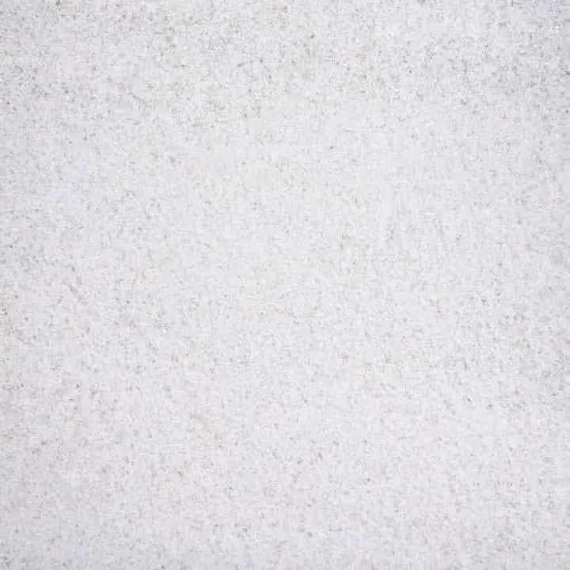

أرضية المشهد.
ابدأ بالتفاصيل التي تحدد مساراته.
رمل أبيض طبيعي — 1 كجممثال من مجموعة الأرضيات؛ كمية الرمل في المشهد توضيحية.
استكشف الرملكل الأرضياتابدأ بأحد مكونات الحوض، واستكشف المجموعة بطريقتك.
المشهد تصوّر بصري. الصور التالية لمنتجات فعلية من المجموعة، وليست باقة للمشهد المعروض.

ابدأ بالتفاصيل التي تحدد مساراته.
رمل أبيض طبيعي — 1 كجممثال من مجموعة الأرضيات؛ كمية الرمل في المشهد توضيحية.
استكشف الرملكل الأرضيات
ورقة صغيرة قد تكون نقطة البداية.
سيسيفلورا Limnophila sessilifloraالنبات المصوّر مثال من المجموعة؛ المشهد يجمع أنواعًا متعددة.
استكشف النباتات
تعرف على المعدات التي تختارها لحوضك.
فلتر كانستر خارجي دوفين — 410 لتر/ساعةاختر المعدات وفق حجم حوضك واحتياجاته.
استكشف الفلتركل الفلاتر